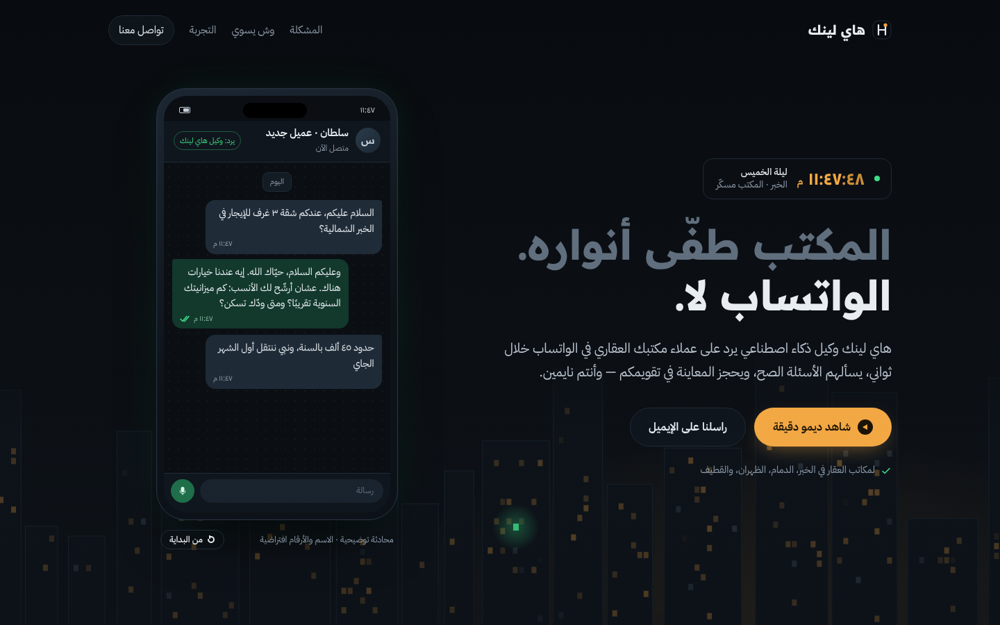
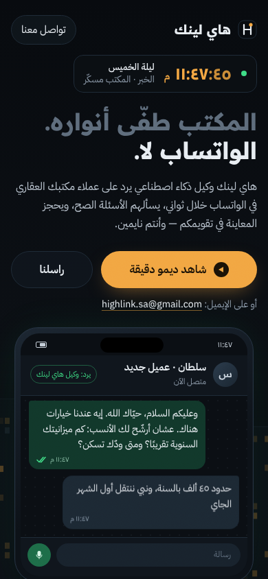
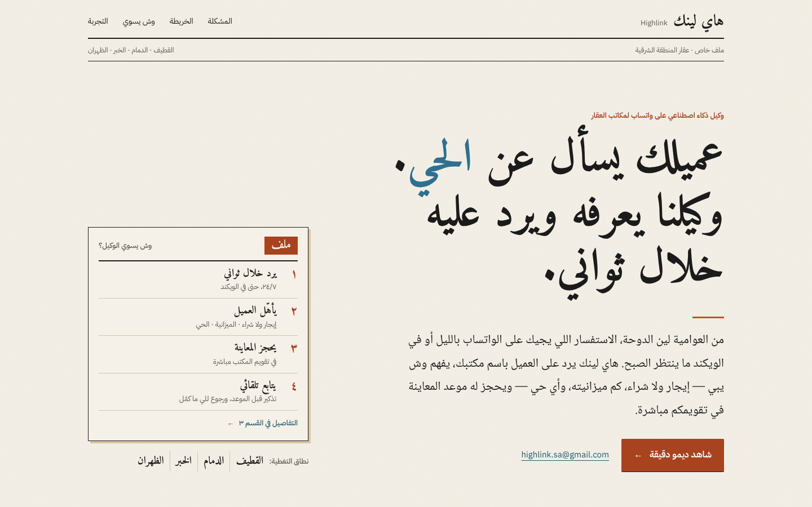
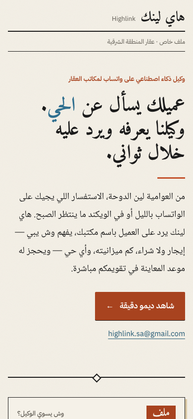
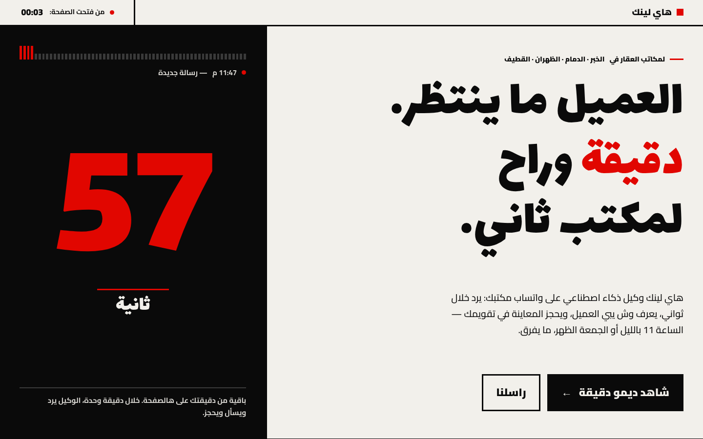
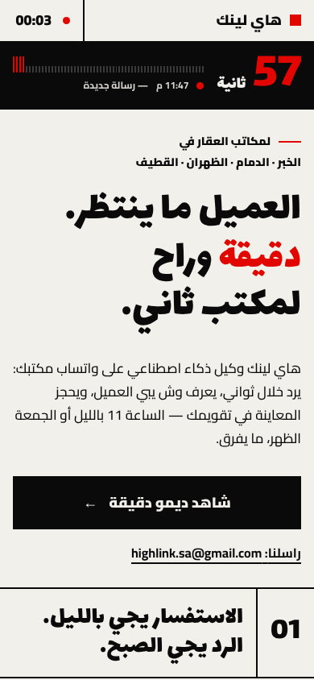

نفس العرض، ثلاث اتجاهات فنية. اضغط على أي صفحة لفتحها.


الساعة ١١:٤٧ بالليل، ومحادثة واتساب حيّة تأهّل العميل وتحجز المعاينة.


خريطة تفاعلية للشرقية: اختر مدينة وشوف استفسار من أحيائها وكيف ينرد عليه.


سباق بين مكتبك وهاي لينك: عدّاد رسالة ما انرد عليها مقابل رد خلال ثواني.